✕
Единая платформа для всей команды служения — с любого устройства, без установки
🌐 songs.winsys.lvСистема создана для церковных общин — всех, кто участвует в организации и проведении богослужения. Каждый участник работает в своём интерфейсе с нужными именно ему инструментами.
Поскольку это веб-приложение, никакой установки не требуется — достаточно открыть браузер на смартфоне, планшете или компьютере.
Все общины, использующие систему, работают с общей базой данных: песни, переводы Библии, послания с таймкодами, проповеди — всё в одном месте.
Стоит добавить или изменить материал — и это мгновенно становится доступно всем общинам. Никаких пересылок файлов и дублирования работы.
Поиск песен ведётся одновременно по названию и по тексту — достаточно вспомнить любую строчку.
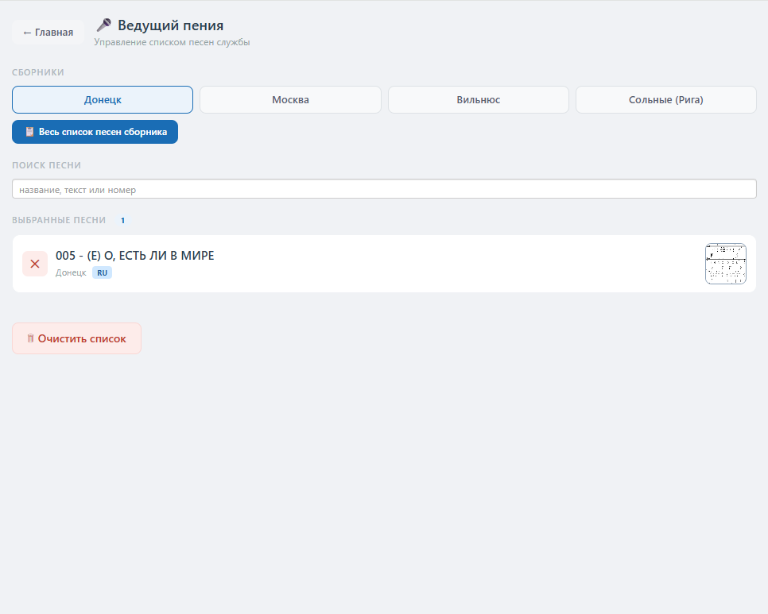
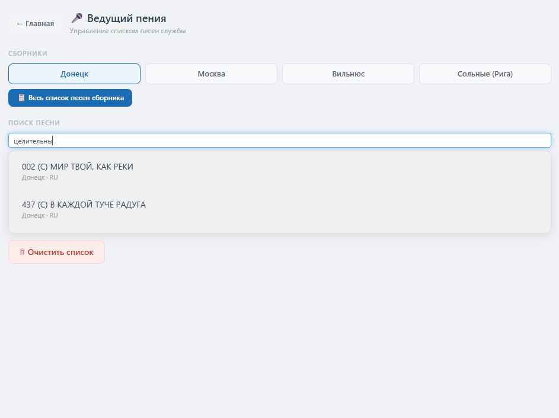
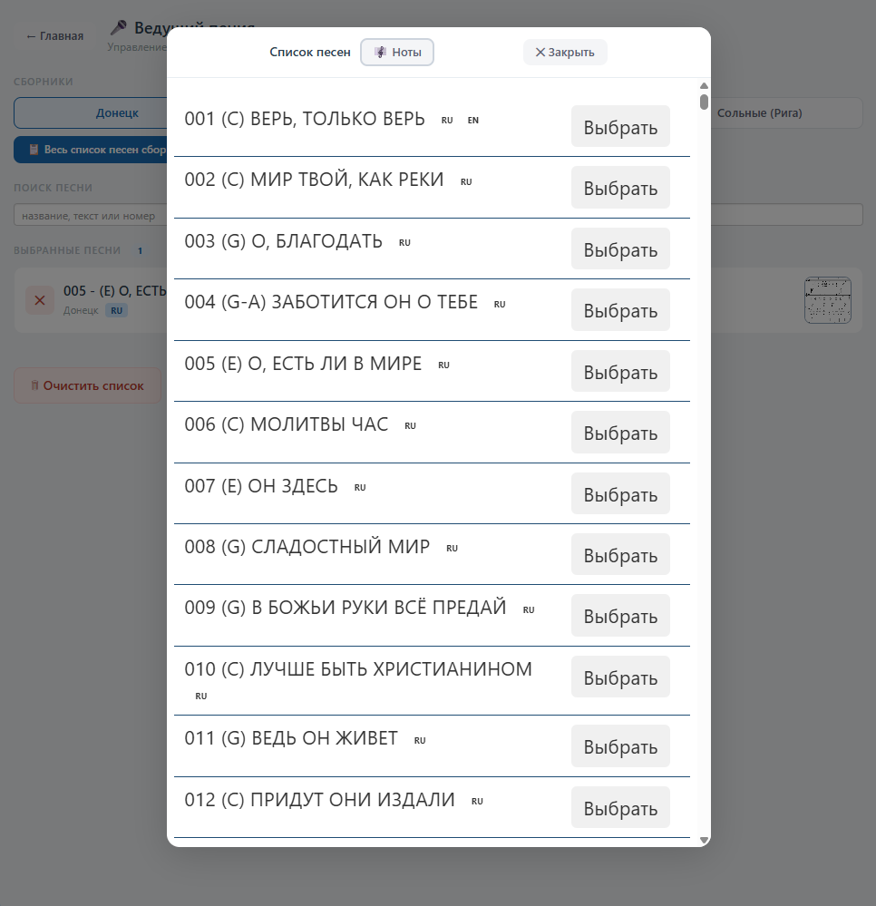
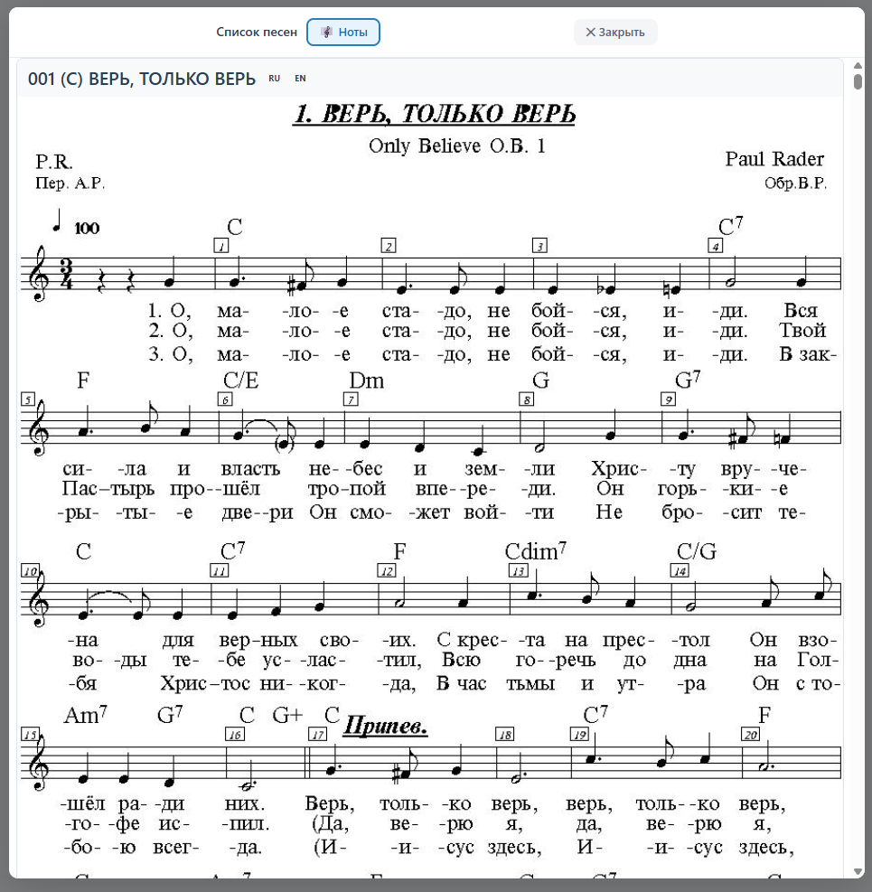
Администратор создаёт учётные записи для каждой роли прямо в настройках — задаёт имя, логин и пароль. Можно подключить Google-аккаунт для интеграции с облачными сервисами.
Каждый пользователь видит только свои функции. Настройки позволяют выбрать доступные сборники песен, шрифты, цвета фона и текста для каждого типа экрана — основного и трансляционного.
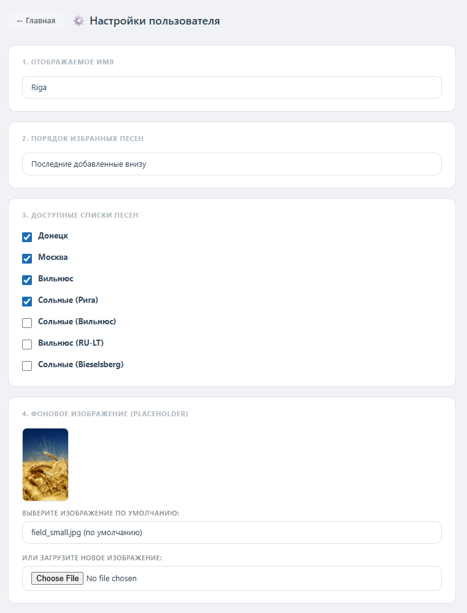
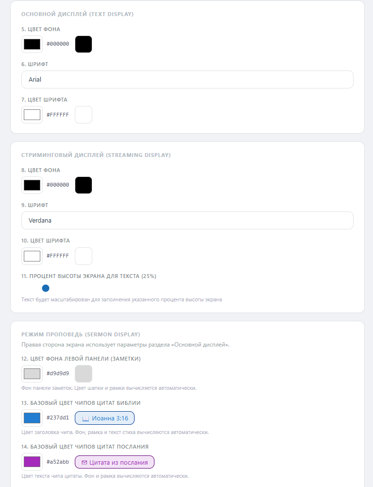
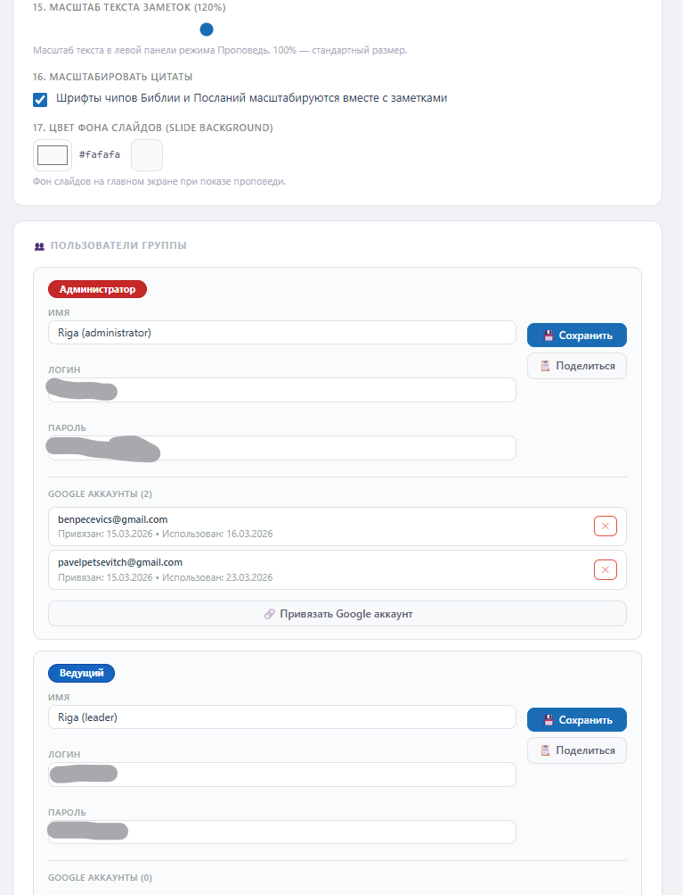
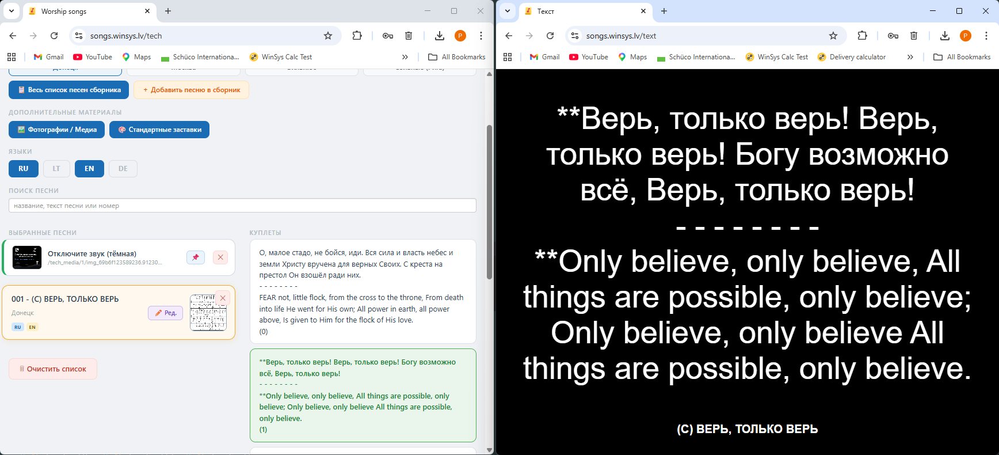
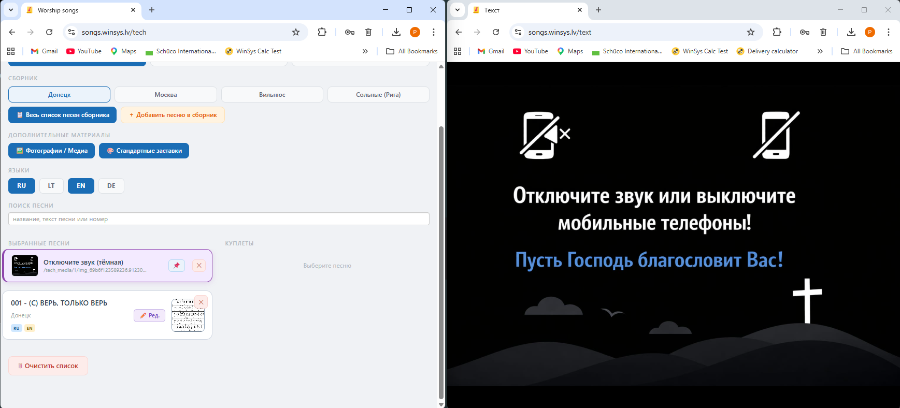
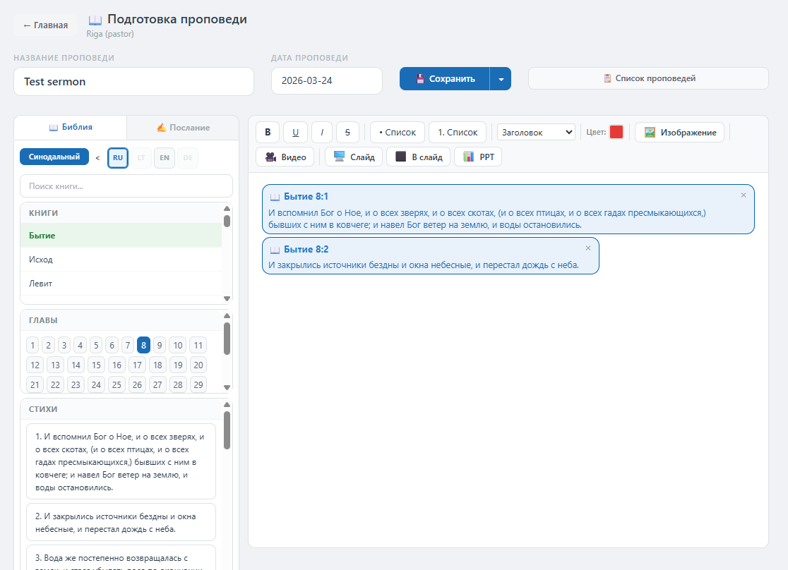
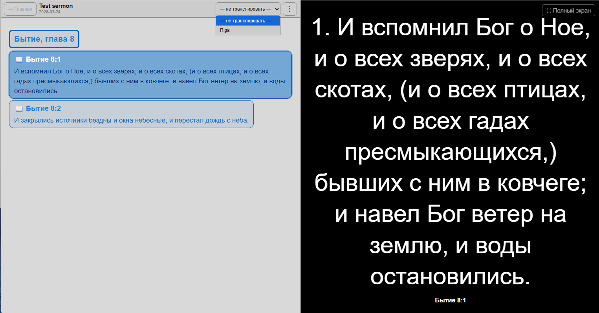